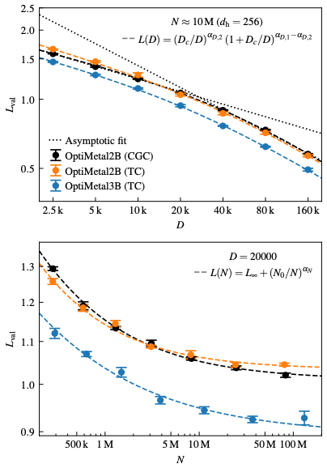
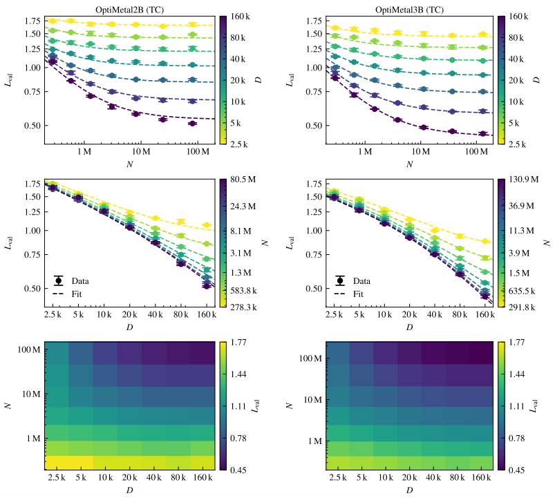
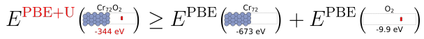
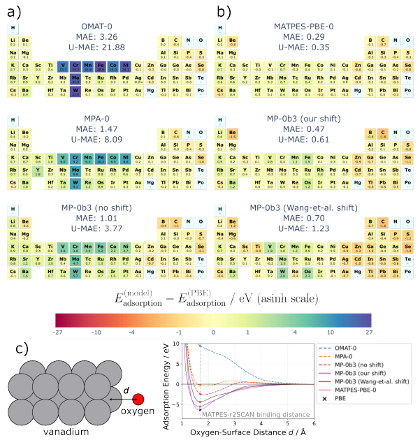
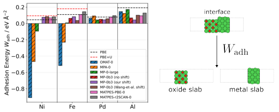
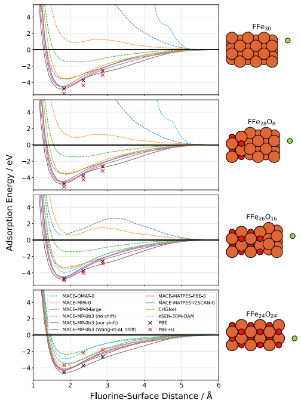

Why talk about data when we talk about foundational MLIPs
A foundational MLIP is not just a bigger neural network. It is a claim about coverage. It is trying to represent a single potential energy surface across a lot of chemistries, bonding types, and structural motifs. That puts data quality and data composition in the driver seat.
Two recent papers made me think about data from complementary angles.
One asks what performance scaling with dataset size and model size looks like in a large materials learning task. It finds that the usual simple power law story can break in a pretty striking way ([1]).
The other shows a concrete failure mode where a widely used reference data pipeline quietly encodes two different energy scales. A model trained on the mixture learns the inconsistency and then fails in exactly the places we care about for catalysis and oxidation ([2]).
Paper 1: Broken neural scaling laws in materials science
Grossmann, Grunert, and Runge study neural scaling laws on a task that is not an interatomic potential, but is very relevant to how we think about data-hungry materials models. They look at predicting optical response, specifically the frequency-dependent complex interband dielectric function and the Drude frequency for metals ([1]).
A key practical point is that they actually have enough data to probe scaling. They generate dielectric functions for 205,224 intermetallic compounds filtered from the Alexandria database, and they report 201,361 converged calculations that make it into the final dataset ([1]).
They then train two closely related invariant graph neural networks. OptiMetal2B is a two-body message-passing model. OptiMetal3B adds explicit three-body interactions ([1]).
The part I am going to steal for MLIPs: scaling can have regimes
They subsample the training set over more than an order of magnitude in dataset size and they also sweep model size across orders of magnitude. The result is a clean look at how validation loss behaves as you change D and N ([1]).

In their Figure 1 setup, the data scaling sweep holds the model size fixed at about 10 million parameters, and the parameter scaling sweep holds the dataset size fixed at 20,000 structures. They define the validation loss as the sum of mean absolute errors for the interband dielectric function and the Drude frequency ([1]).
The dataset-size scaling is the surprising part. Instead of a single power law, they fit a smoothly broken power law and the slope changes around a crossover dataset size Dc. In the low-data regime the scaling exponent is around 0.15 to 0.18. Above Dc the exponent steepens to around 0.38 to 0.42. The fitted Dc values are around 10^4.43 to 10^4.72 training examples, so on the order of a few times 10^4 ([1]).
What does that mean in plain terms? Early on, adding more data helps, but it helps slowly. After the crossover, each additional chunk of data buys you a larger reduction in validation loss than it did before. In their discussion, one way to think about this is that in the smallest data regime the model is underconstrained and can only learn broad trends, while finer structure-property correlations become learnable once the dataset samples a wider range of environments ([1]).
Parameter scaling looks different. Validation loss improves with model size up to a few million parameters and then saturates quickly. They fit a power law with a saturation floor, with scaling exponents around 0.41 to 0.58 depending on architecture ([1]).
A small methodological detail that I like is that they do not force one functional form. They compare multiple candidate scaling functions and select among them using AICc. In their fits, the broken power law is preferred for data scaling, and a saturating form is preferred for parameter scaling ([1]).
Two dimensions matter: D and N interact
They also do a two-dimensional analysis where they vary dataset size and model size together and plot a full L(D, N) landscape. This matters because if you always keep the model heavily overparameterized, you might see artifacts that are not intrinsic to the task ([1]).
Their 2D maps show that the story is more nuanced. In an intermediate regime where model capacity and data are better matched, the data scaling can look closer to a simple power law. As you push back into strongly overparameterized settings, the broken behavior can re-emerge ([1]).

There is also a subtle but useful architectural point. Adding three-body interactions in OptiMetal3B shifts the curves downward and improves performance. In the 1D view, the exponents look broadly similar across architectures, but the 2D view suggests that increasing body order can improve data scaling without changing parameter scaling much ([1]).
What I take from this for foundational MLIPs
Even though this paper is about optical response, I think it gives a helpful lens for foundational MLIPs.
First, scaling with dataset size might not be one smooth power law over the ranges we actually care about. If there are regime changes, then the marginal value of additional data depends on where you are on the curve.
Second, if you are in a regime where model capacity is not the limiting factor, scaling up the model may do very little. That is a reminder to not assume that larger always wins in the materials setting, especially when data is expensive ([1]).
Third, the idea that you might need to cross a threshold before you get into a data-efficient regime feels very relevant to MLIPs. Many MLIP failures are about rare or underrepresented local environments, like unusual coordinations, strained transition states, or tricky interface motifs. A dataset can grow without meaningfully adding those environments. If you only count total structures, you might miss the fact that your effective dataset size for the hard parts is still tiny.
That last point is more of an inference than a conclusion of the paper. The paper does not claim an MLIP-specific mechanism. But the regime change is a useful reminder that dataset diversity and dataset size are not the same thing ([1]).
Paper 2: Better without U: Impact of selective Hubbard U correction on foundational MLIPs
Warford, Thiemann, and Csanyi look at a very specific data issue that comes from how a lot of popular training datasets were built. Many foundational MLIPs are trained on data produced with Materials Project settings, and several large datasets reuse those settings ([2]).
In that setup, a Hubbard U correction is applied to selected transition metals only when oxygen or fluorine is present in the simulation cell. The paper lists V, W, Fe, Ni, Co, Cr, Mo, and Mn as the affected metals ([2]).
The core problem is that this creates two different energy surfaces that are not compatible.
One surface is plain PBE for systems without O or F. The other surface is PBE+U for systems where O or F is present. If you compute the energy of a transition metal slab alone, you might be on the PBE surface. If you put an O2 molecule far away in the same cell, the calculation can flip into the PBE+U surface. The combined system is then artificially high in energy relative to the sum of the separated parts ([2]).
For an MLIP, this matters because the model has a finite cutoff. The model has to learn local rules that approximate a global energy. If the reference energy jumps because an O atom exists somewhere in the cell, you are asking the model to interpolate between two incompatible targets. The paper argues that this interpolation produces systematic underbinding and sometimes outright repulsion when oxygen or fluorine approaches a U-corrected metal ([2]).

They show the pathology in the most direct way possible
They start with oxygen adsorption on elemental slabs. They place oxygen on top of 54 elemental slabs and compare adsorption energies from PBE with predictions from a set of foundational MLIPs, including multiple MACE models trained on different datasets, plus CHGNet and eSEN ([2]).
The results are pretty stark. Models trained on datasets that mix raw PBE and PBE+U energies show severe underbinding on the U-corrected metals. Some models trained on OMat24 or Alexandria predict that oxygen does not bind at all and can even be repulsive out to large distances ([2]).

They then push beyond single adsorption and look at metal oxide adhesion energies. For Ni/NiO and Fe/FeO interfaces, some models trained on affected datasets predict unstable interfaces and the slabs move apart during relaxation. That is exactly the kind of failure mode that would make you distrust a model for oxidation, corrosion, or catalysis ([2]).
Dataset composition controls how bad it gets
One of the most useful parts of the paper is that they connect the severity of the issue to something measurable in the training data.
They compute an oxygen number density for the configurations in the training set that contain both oxygen and a given U-corrected element. Datasets with lower oxygen number density show worse oxygen underbinding on that element. The proposed mechanism is intuitive. If oxygen is sparse, it is more likely that U-corrected metal sites see oxygen only at the edge of their receptive field. Training examples like that teach the model that whenever oxygen comes within the cutoff radius of a U-corrected element, the energy should increase sharply. That learned pattern then shows up as spurious repulsion in simple adsorption tests ([2]).

This is the kind of point that feels obvious in hindsight, but it is rarely quantified. It also gives a warning for future dataset scaling. If new data adds more mixed PBE and PBE+U configurations with low oxygen content, the issue can get worse even as the dataset gets larger ([2]).
A practical fix: align the energy scales
The cleanest solution is to avoid the selective-U scheme entirely for foundational MLIP training data. The paper points to datasets like MatPES and MP-ALOE that omit U and avoid these pathologies ([2]).
But for existing large datasets that already inherit Materials Project settings, they propose a simple post hoc correction.
They fit a constant per-U-corrected-atom energy shift for each affected metal species. They use an overlap between MatPES PBE structures and Materials Project PBE+U calculations for identical geometries. They report 25,094 matched structures and fit shifts to minimize mean squared error between shifted PBE+U energies and PBE energies ([2]).
Before correction, the mean difference between PBE+U and PBE energies across these matched structures is 0.46 eV per atom, which they also report as about 2.5 eV per U-corrected atom. After applying their fitted shifts, the mean difference drops to 0.014 eV per atom ([2]).

The nice part is that this correction is aimed at PES smoothness rather than phase-diagram accuracy. They show that models trained on MPtrj with their shift applied have substantially lower mean absolute error for oxygen adsorption energies on U-corrected slabs than models trained with the widely used Wang et al. correction ([2]).
Putting the two papers together: what data means for foundational MLIPs
I like that these papers hit two different failure modes that both show up in foundational MLIPs.
The scaling-law paper is about quantity and regimes. It suggests that you might not see smooth diminishing returns with dataset size. You can have thresholds where the learning problem changes character. In practice, that means scaling studies can be worth doing even in materials, because your intuition about where you are on the curve might be wrong ([1]).
The Hubbard-U paper is about consistency. It shows that more data is not automatically better data. If your dataset mixes incompatible reference energies, a high-capacity model will learn the inconsistency and then fail systematically in chemically important places ([2]).
If I had to boil this down into a few working heuristics for MLIP training, it would be these.
Heuristic 1: Count coverage, not just structures
For MLIPs, the quantity that matters is not only how many structures you have. It is how well the dataset covers the local environments that define your target applications. Scaling curves can change slope when the dataset starts covering the right modes, not just when D gets larger ([1]).
Heuristic 2: Track energy provenance like it is part of the label
The Warford et al. story is a reminder that energies and forces come with hidden metadata. Functional choice, U usage, pseudopotentials, smearing, and even workflow decisions can define different energy scales. Mixing them can create contradictions that a local model cannot resolve.
At minimum, foundational datasets should make this metadata easy to query and filter. Ideally, the model should be conditioned on it, or the dataset should avoid mixing it in a way that depends on chemical composition ([2]).
Heuristic 3: Use targeted stress tests that probe known discontinuities
The oxygen adsorption and metal-oxide adhesion tests in the U paper are great examples of a focused benchmark that reveals a dataset pathology quickly. If you are building or training a foundational MLIP, it is worth having a small battery of tests like this that specifically probe interfaces, adsorption, oxidation states, and other places where reference data pipelines can have discontinuities ([2]).
Heuristic 4: Data fixes can be cheaper than model fixes
The per-atom shift proposed by Warford et al. is appealing because it is simple and cheap. It is not trying to solve correlated-electron physics. It is trying to remove an avoidable inconsistency that breaks the smoothness of the target PES. That kind of correction can be more valuable than adding more layers or more parameters ([2]).
A few things I am left thinking about
One open question for me is how often we are unknowingly in a broken scaling regime in MLIPs. If scaling breaks because of dataset heterogeneity, then mixing multiple datasets, multiple workflows, or multiple energy references might produce apparent regime changes that are not really about capacity or physics.
Another question is whether we should embrace the multi-surface reality rather than fighting it. Instead of forcing a single universal PES, maybe the right abstraction is a conditional model that can represent multiple reference levels and map between them. That starts to look like a foundation model in the broader ML sense, not just a bigger potential.
I will probably come back to both of these themes. For now, these two papers are a good reminder that in foundational MLIPs, the dataset is not just training fuel. It is the definition of the thing you are modeling.
References
- Grossmann M, Grunert M, Runge E. Broken neural scaling laws in materials science. arXiv 2602.05702 (2026). arXiv abstract
- Warford T, Thiemann FL, Csanyi G. Better without U: Impact of selective Hubbard U correction on foundational MLIPs. arXiv 2601.21056 (2026). arXiv html